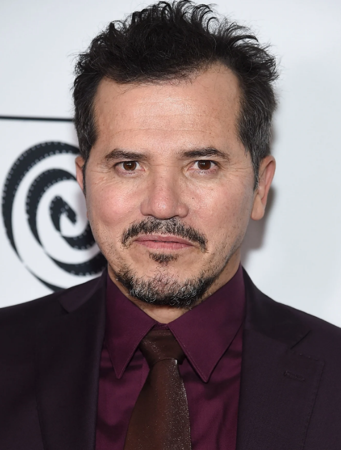
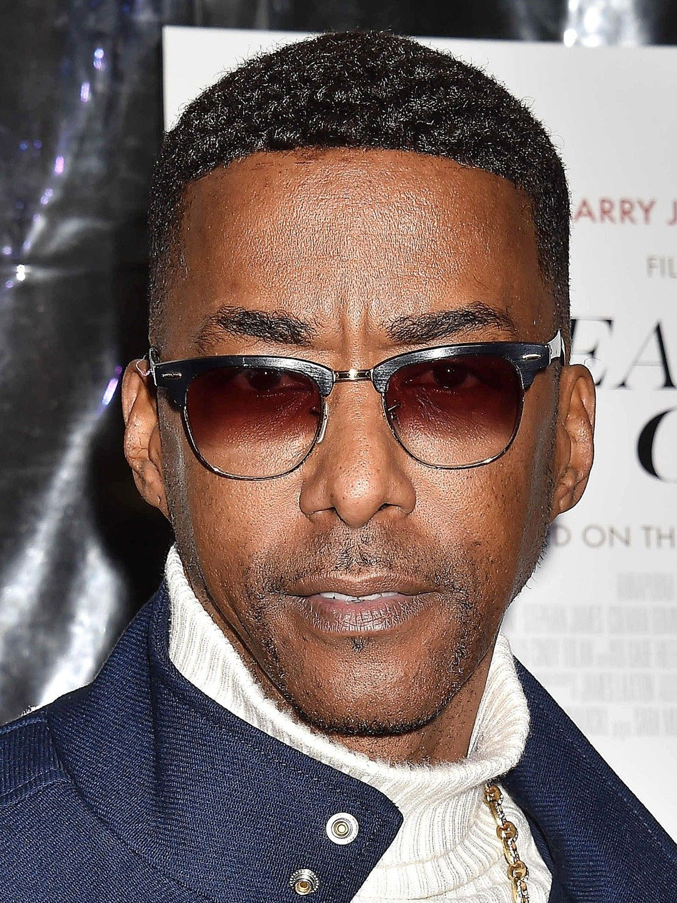

Convidados
John Leguizamo
John Leguizamo interpretou o Luigi em Super Mario Bros (1993), hoje em dia ele tem um grande carinho pela obra e pelos fãs e irá palestrar falando sobre como foi o processo de produção do filme.
Miguel A. Núñes Jr.
O Ator Miguel A. Núñes Jr interpretou o lutador Dee Jay em Street Fighter the Movie (1994), ele falará sobre como foi a produção do filme e também sobre a recepção do filme como um todo.
Alicia Vikander

Alicia Vikander interpretou Lara Croft no filme Tomb Raider (2018), e falará sobre como é adaptar um jogo nos dias mais atuais e como foi ter que atuar após outra atriz ter popularizado a personagem nas telonas.
Hideo Kojima

Hideo Kojima é muito famoso por desenvolver jogos com um estilo mais cinematográfico de narrativa, nessa palestra ele falará um pouco sobre como foi ser o pioneiro a fazer esse tipo de enredo para jogos.
Madeline Stephanie Thorson

Maddy Thorson falará sobre como é a experiência de desenvolver jogos indies e lidar com questões de gênero e sexualidade em histórias de vídeo-games.